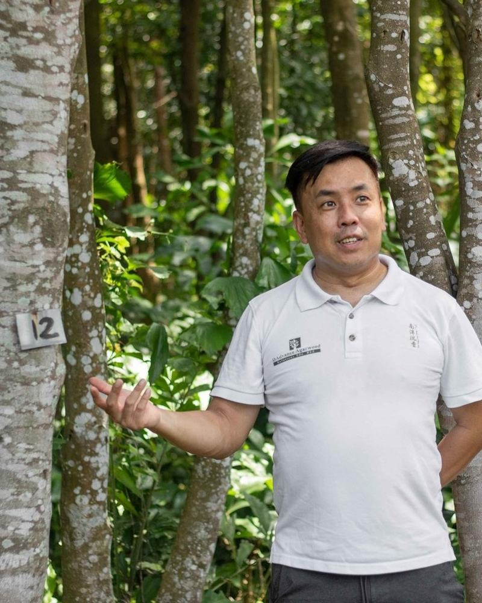

茂名电白的沉香是白木香种，属于惠安系。香韵以清甜、凉意、蜜韵为主，室温下清雅，上炉后层次干净，尾调甜凉。
油脂上，电白料的油线细腻自然，颜色棕褐，深浅过渡自然。好料油脂丰富，密度中等，香韵和油脂挂钩。
电白是中国沉香种植面积较大、产业链较完整的地区之一，从育苗、种植、结香、采收、加工到销售、检测，各个环节都有人在做。沉香产业是当地的重要产业。
电白沉香协会还参与制定了 T/DBCX 010-2025《奇楠沉香鉴定及质量分级》，这是国内奇楠鉴定的团体标准之一。
产业链完整的好处是溯源相对容易：从哪棵树、哪块地、哪年结香，到哪批加工、哪份检测报告，链条短，问得清。买家可以直接问到源头。
但产业链完整不等于每块料都好。茂名料里也有品质参差，买之前还是要看香韵、油脂、证书，一样的标准。
电白的沉香产业从种植延伸到加工和销售：精油蒸馏、手串加工、线香制作、香材交易，各个环节都有企业在做。本地也有沉香市场和检测条件，买卖相对透明。
产业链完整不等于没有假货。电白市场上同样有泡油、染色、套证的料，买之前还是要按文章 01 的方法自查，看香韵、油脂、证书，一样的标准。
第一，产区名不能当真假证明。证书只证明材质，不证明产地是茂名。溯源说不清的，先别买。
第二，亲自闻。清甜凉意、蜜韵是茂名料的常见风格，闻着发闷、单一甜香、带化学味的，先别买。
第三，问检测。茂名本地有检测条件，正规商家应该能提供一物一证的 CMA 报告。提供不了的，先别买。
本 App 由茂名种植园团队发起，作者从 2002 年起种沉香。写茂名这篇，不是为了推销自家料，而是因为了解得比较深，写得最实在。
内容上我们坚持中立：茂名料有自己的特点，也有自己的局限。产区没有高低之分，只有风格不同。选哪个产区，看你的口味和用途。
| 看什么 | 茂名电白常见表现 |
|---|---|
| 香韵 | 清甜凉意，带蜜韵 |
| 树种 | 白木香 |
| 产业链 | 种植、加工、检测完整，溯源相对容易 |
| 标准 | T/DBCX 010-2025 奇楠鉴定分级（电白协会） |
| 适合 | 喜欢清甜凉意、看重溯源的人 |